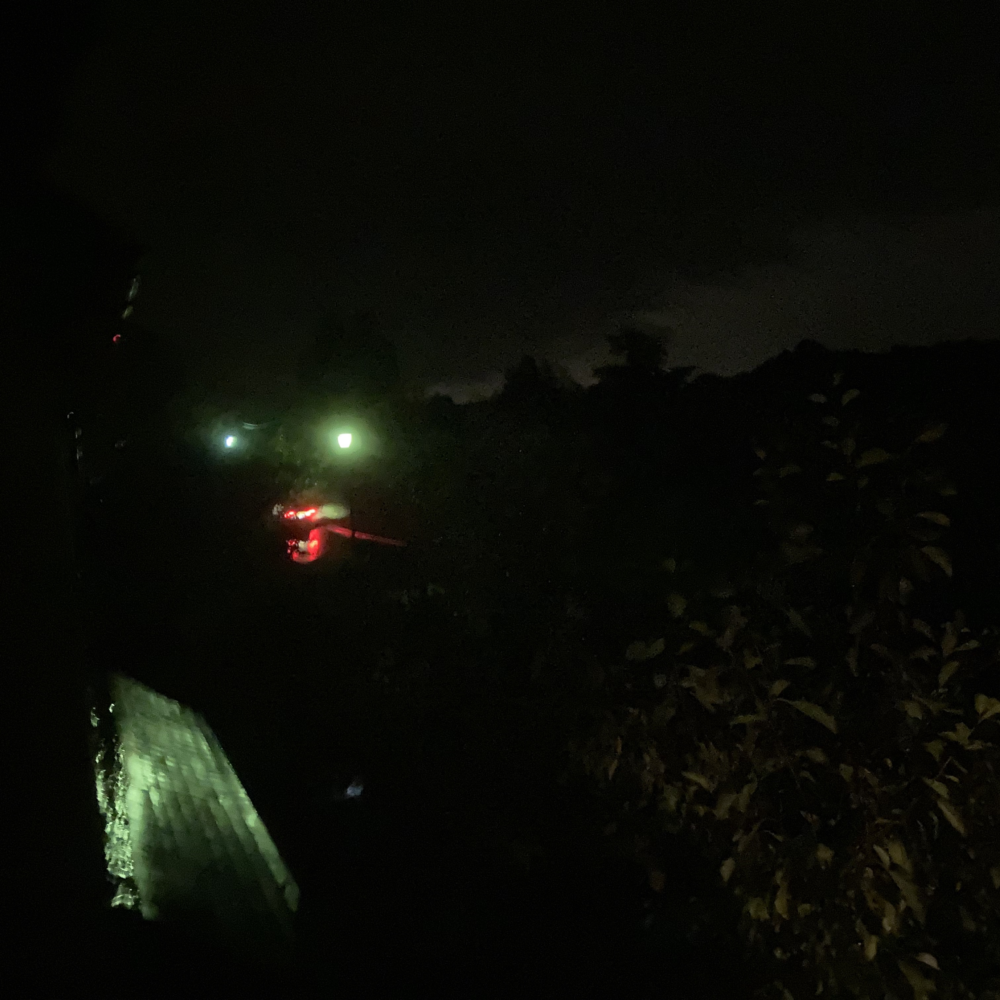
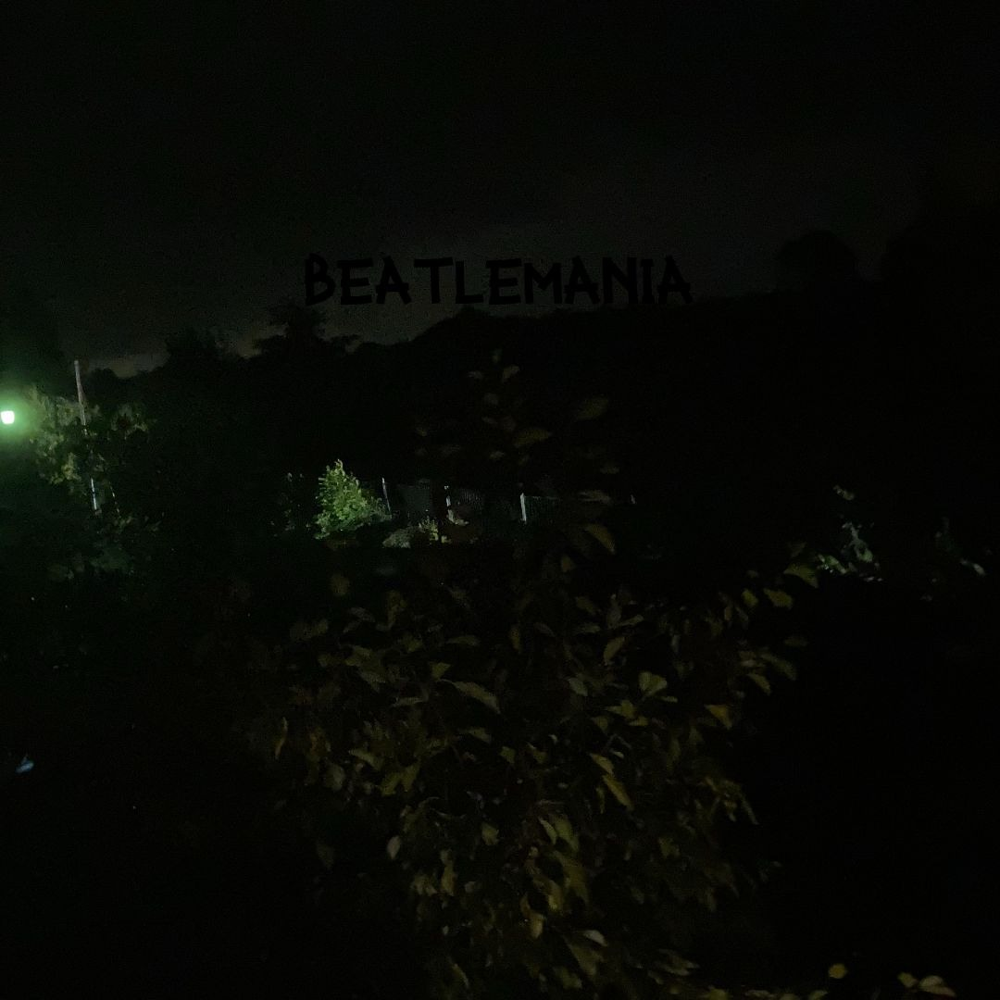

And the Pandemonium Continued
And the Pandemonium Continued is my first EP, released on 24 July 2023. It focuses solely on breakbeat, a genre defined by sampling drums from old records and making something new out of them. The EP features five original breakbeat tracks, along with one remix as a bonus track. The idea for the EP started with a couple samples which I had discovered and wanted to use in a breakbeat track, which then evolved into a full EP. The tracks were recorded in a strange system of one per month, starting in April 2023 until I finally decided I wanted the thing done and finished it in July.
Background
After finishing my last album DJB Twinned, I, at some point, came up with the idea for a breakbeat EP. But, with no samples or ideas for songs, it remained just an idea in the back of my mind.
In October 2022, I got my hands on an original copy of the Beatles album Sgt. Pepper's Lonely Hearts Club Band from elsewhere in my family. I listened to it once and didn't think too much of it, mainly because I wasn't really paying attention to the album and let it just wash over me. However, despite this state of not-really-listening, I managed to parse out a drum break, that being the one that opens the reprise of the title track. I took note of it, and left it at that.
Later in 2022, I discovered the music of Tim Minchin, an Australian comedy musician, through the track "Dark Side". Once again, I noted one particular section of the piece, which seemed reminiscent of the kind of melody you'd hear in a breakbeat track. Although, like last time, I left it at that.
In the following months, there were a couple attempts to write this planned breakbeat track using the previous two samples mentioned. These failed, and the project remained something only in the back of my mind.
However, in April 2023, I revisited the Beatles album, and this time I actually tried to listen to it. I discovered that I actually liked it, and so began my spiral into Beatlemania. However, the song "Beatlemania" also really started here, as with this renewed interest in the album, I was reminded of the track I was planning to make with it. However, this time, with my new knowledge of Beatles songs beginning to grow, I decided to make it not as a track with both samples, but just focused on the Beatles.
Recording and production
The first track, "Beatlemania", was recorded in April 2023. I dug around in the Beatles catalogue for samples other than the "Sgt. Pepper's" sample, and found the many instances of talking heard on the track. The track took a bit to get down, but once it was, I was really happy with it. I still remember the smile on my face the first time I heard George's “1, 2, 3, 4” lead into the main section. With that done, I moved on to the other sample I had found, that being of "Dark Side" by Tim Minchin. After holding it off for a little bit, the second track on the EP, "The Brighter Side of Things", was finished in May. Around the same time, my idea for the bonus track, "Amenwall", came to fruition after some work of editing the samples. I put the project on hold for another month, mainly out of demotivation, and then came back to write "Bring in the 909", based on some new samples I had discovered, one of them again a Beatles song. Then, finally, in July, I pushed myself to finish the EP, and wrote two more tracks in a couple days, "Old Tactics", and then "Liam's Hideout". This then also means that the tracks on the EP (with the exception of "Amenwall") are featured in the order that I wrote them. And with that, the EP was done, and I released it shortly after.
Artwork
The artwork was from a series of photos I took outside of my house in September 2022. I used this photo in particular because I felt that without the context of what I really was, it looked like a rather evil smile in the darkness. In actuality, the eyes are street lamps, while the smile is a car passing by, some of its lights being blocked by a tree. The actual lights form the upper lip, and the lower is the reflection of the lights on the wet ground. A roof of a nextdoor house is also visible. Once I took the photo, I knew it would be for the EP, which while production hadn't started on it, I had the idea for.
I used another photo from the shoot to make the cover for the “Beatlemania” single.
Release
"Beatlemania" was released early, on 30 April, simply because I was so chuffed with it that I wanted to get it out immediately. Singles from EPs are unusual, but I just wanted to put it out to prove that after a long while of not really writing music, I was back in the game with something good, for once. After the EP was complete, I announced its release with a 1992-themed mix, 1992 being the “peak year” of breakbeat, released on 21 July, followed by the release of the EP three days later on the 24th.
Songs
"Beatlemania"
As previously mentioned, “Beatlemania” came about from the drum sample from “Sgt. Pepper's Lonely Hearts Club Band” (Reprise), and then my sudden interest in the Beatles. The second sample featured is from the track “Revolution”, the B-side to “Hey Jude”. It opens with an extremely loud guitar tone, which I liked, and so I sampled a small clip of it, put it through multiple filters, including most notably a gate, and created the sound you hear on the track. From there, I dug around for more speech samples, and I found some on the various “Super Deluxe” versions of their later albums. The first, featured in the breakdown, was found with the intent of just getting the band saying something to fill the breakdown, as I had heard that technique in breakbeat songs before. The second, featured just before the final drop, was found in an attempt to find a good count-in from one of the early takes of any Beatles song. The final, featured at the end, was actually found completely by accident while I was trying to get more sounds to sample, not vocals. At the end of a take of “Helter Skelter” (still one of my all-time favourite Beatles tracks), Paul says “Keep that one! Mark it fab!”, which I felt would be a fitting end to the track, as breakbeat songs often had off-the-wall endings, rather than trance which priorities being able to transition out of the track in a DJ mix. The ending drum beats also contain a reference to the Amen break, where instead of playing the groove that had been going for the whole track, the drum sounds switch to playing the break.
"The Brighter Side of Things"
The second track, “The Brighter Side of Things”, was also the second idea I had for the album, that being using a certain section from Tim Minchin's “Dark Side”, which I felt sounded like a breakbeat melody from something on the cheesier end of the spectrum, like “A Trip to Trumpton” by Urban Hype. While originally this sample was going to be used over the “Sgt. Pepper's” drum beat from “Beatlemania”, when that track evolved into its own thing, I made this one separately.
Luckily for me, “Dark Side” had been transcribed by George Collier, so I could convert the .xml file on their website to .midi, and then use that. From there, I stole a sample from the Prodigy and got hold of some of the audio files from the original Wipeout video game, and I was there.
When actually structuring it, I discovered that just the right hand on its own made a decent melody, so I used that at first. Then, when the track was coming to a close at around the five minute mark, I found myself unable to just end it with the great synth bass in the track, and so I brought all of the other elements back, extending the track by two minutes.
I would later make a (far superior) version of this song for The Defibrillated Collection.
"Bring in the 909"
After recording the previous two tracks, I had an issue in the fact that I did not have any other ideas. While I did find the drum sample used in the track, Elvis' “A Little Less Conversation”, I really don't know why I used the “One After 909” sample. My best guess is that I used it because the Roland TR-909 is a popular drum machine, and I wanted to do something to do with that. The track also features a “drum battle” between the TR-909, used in the track, and the Elvis drum sample.
"Old Tactics"
By this track, I was again out of ideas and frankly just wanting to get this EP done. And so, I turned to an old tactic, where the name comes from, of using loops. Even so, I used MIDI loops to maintain some dignity. There isn't much else significant about the track, other than its melody, relying mainly on arpeggios, which is unusual for me (it wasn't a loop, in case you're wondering). When I first heard it, I thought it sounded like something one of my friends would make.
"Liam's Hideout"
Over the course of making this EP, I would go on whosampled.com to find drum samples, because I only knew of a few that I could use. I would mainly turn to samples used by breakbeat legends the Prodigy, and so, with no ideas, I decided to just steal a bunch of their samples and make a track out of it. That is where the name came from, referring to band member (and principal songwriter) Liam Howlett.
"Amenwall"
Early in the recording process, I had the pretty random idea to take the drums from the Amen break, an extremely famous drum break, and put them underneath “Wonderwall” by Oasis. This came about because I knew a friend who liked both, and I noticed that the actual drum groove used in “Wonderwall” is extremely similar to the Amen break. It took longer than I thought to get the two to cooperate, mainly because “Wonderwall” is a rock song that was recorded without a click track, so I couldn't rely on the song's BPM remaining exactly the same the whole way through. Even so, I got it to work in the end.
Originally, the track was meant to be a hidden track, which on YouTube would work by unlisting the video and placing it in the EP's playlist. However, seeing the meme potential, I left it public. This would prove to be a good move, as the video garnered around 600 views soon after release, which is good for someone like me. There was a spike in activity after Oasis' reunion in 2024, and as of January 2025 the video stands at 1,500 views.

Released: 24 July 2023
Recorded: April–July 2023
Length: 30:33
Length: 34:53 (with bonus track)
- "Beatlemania" – 5:16
- "The Brighter Side of Things" – 7:09
- "Bring in the 909" – 6:14
- "Old Tactics" – 5:51
- "Liam's Hideout" – 6:05
- "Amenwall" (bonus track) – 4:20

Released: 30 April 2023
Recorded April 2023
Length: 5:16
- "Beatlemania" – 5:16